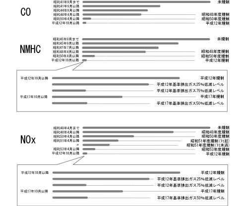

| エンジン概要 |
| ● |
エンジン構成は，2NZ-FE（1.3Lガソリン）エンジンおよび1NZ-FE（1.5Lガソリン）エンジンを採用しました。
|
| ● |
2NZ-FE・1NZ-FEエンジンは，VVT-iの採用，インテークマニホールドポート長さの最適化，シリンダーヘッド内インテークポート形状の最適化などにより，低・中速トルクを重視した出力特性として実用域での扱いやすさを高めるとともに，吸入体積効率の向上およびノック限界の改善を追求し，高性能化を達成しました。また，触媒の最適化による低エミッション化を達成しました。
|
| ● |
| 参 考 |
| 排出ガス規制の強化（ガソリン・LPGの乗用車） |
|  |